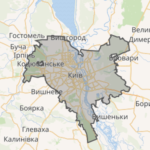

Народився 14 серпня 2004 року у місті Київ, Україна.
Освіта: Технічний ліцей м.Києва; студент Національного технічного університету України "КПІ ім. Ігоря Сікорського", факультет інформатики та обчислювальної техніки, група ІП-33.
Київ — столиця України, одне з найдавніших міст Європи, розташоване на річці Дніпро. Це головний політичний, економічний, культурний і науковий центр держави. Місто засноване понад 1500 років тому, орієнтовно у V столітті.
Київ — колиска східнослов’янської цивілізації та центр колишньої Київської Русі. Упродовж своєї історії місто неодноразово зазнавало руйнувань і відроджень, але завжди залишалося духовним і культурним серцем України.
Серед головних пам’яток Києва:
Сьогодні Київ — сучасний мегаполіс із численними університетами, театрами, музеями, парками та затишними кав’ярнями. Особливо гарне місто навесні, коли квітне каштан — його символ.
